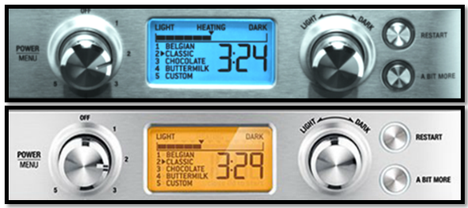
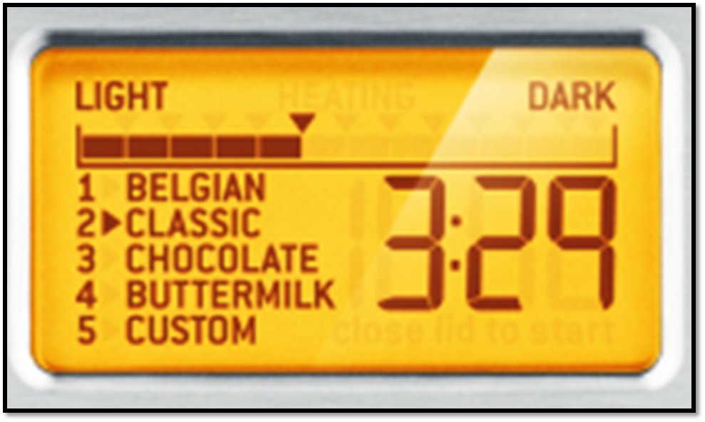
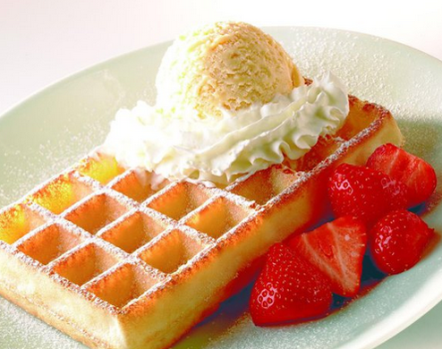
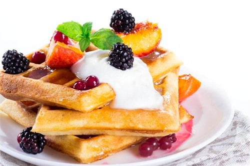
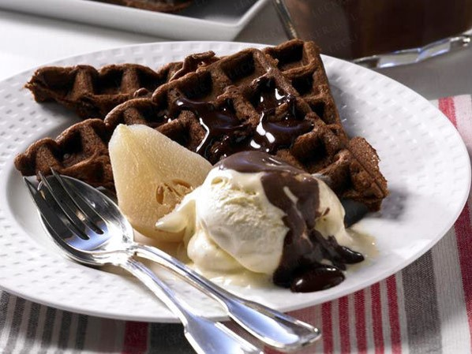
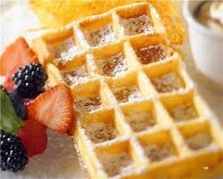
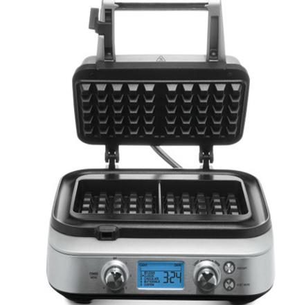
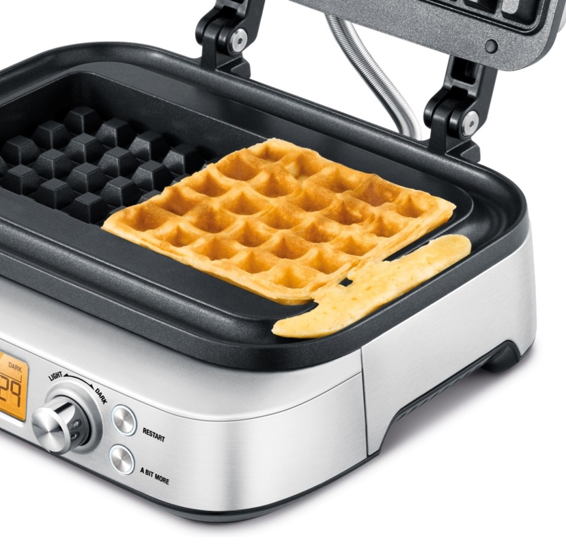
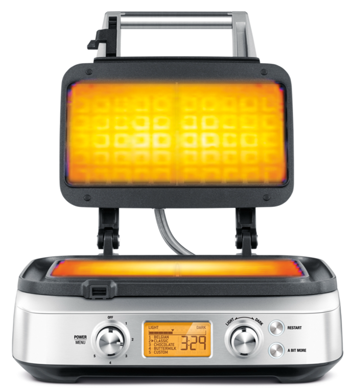
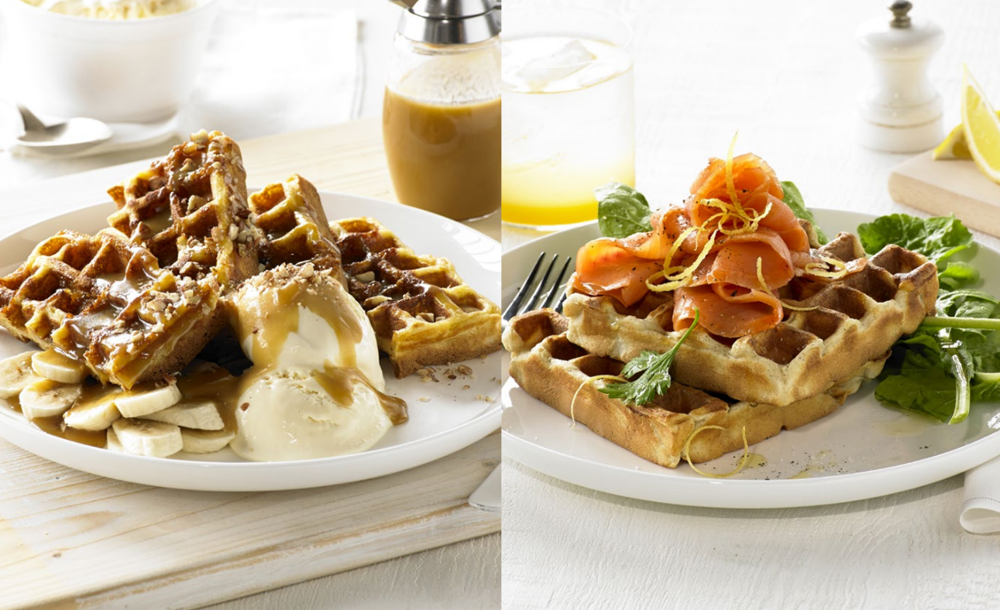

Вафельница BORK G700

В 2014 году вафельница BORK G700 была удостоена авторитетной наградой Red Dot Design Award за высокое качество дизайна, выражая инновации в форме и функциях в образцовой манере.
Информативный дисплей с подсветкой

Позволяет получать наглядную информацию об изменениях настроек, нагреве, оставшемся времени приготовления.
При нагреве, ожидании – голубой цвет дисплея, при приготовлении – оранжевый.
| POWER/MENU | Включение, выбор программы, выключение |
| LIGHT – DARK | Регулятор степени поджаривания |
| RESTART | Сброс таймера приготовления |
| A BIT MODE | Кнопка увеличения времени приготовления |
Надежное, интуитивно понятное электронно-тактовое управление позволяет выбирать необходимые программы, регулировки и функции.
Вафельница, которая знает правильное время приготовления!
4 предустановленных режима позволяют выпекать вафли разных видов: мягкие бельгийские, классические, с добавлением шоколада и на основе пахты. Вафельница сама определяет время выпекания в зависимости от выбранной программы.
Бельгийские (Брюссельские) вафли имеют много различных рецептов для теста, но идеальные вафли получаются пышные, нежные и воздушные.
Классические вафли более румяные и хрустящие, если сравнивать с бельгийскими. Режим, соответственно, отличается большим временем приготовления.
В состав шоколадных вафель обязательно входит шоколад, при этом не обязательно темный. Режим отличается еще более длительным временем приготовления, но при этом меньшей мощностью нагрева.
Вафли на основе пахты. Пахта – это продукт переработки молока, полученный при производстве масла. Она вобрала в себя немало полезных веществ, за которые наши предки так высоко ценили её. Пахту часто используют в выпечке. Современные технологии упростили процесс изготовления пахты. Сейчас в обезжиренное коровье молоко просто добавляют кисломолочные бактерии, которые придают ему густоту. В домашних условиях можно воспользоваться натуральным йогуртом или нежирным кефиром с бифидобактериями. В результате реакции кислоты с разрыхлителем выделяется углекислый газ и образуются пузырьки, вафли поднимаются, становятся пышными, легкими и нежными. Режим отличается более низкой интенсивностью нагрева.
CUSTOM
Пользовательский режим позволяет самостоятельно устанавливать время приготовления от 15 секунд до 19 мин. 59 сек. для вафель из теста по собственному рецепту. Разнообразие вафель впечатляет. И для воплощения необычных рецептов иногда требуется гораздо больше времени. К примеру, приготовление вафель из такого популярного продукта, как картофель. Вот очень простой рецепт: 2 кг. картофеля, 3 яйца, 250 гр. сметаны, 2 ч. л. хрена, специи. Картофель нашинковать, жидкость отжать, добавить оставшиеся ингредиенты и перемешать. Необходимо выбрать программу CUSTOM и установить время приготовления 15 минут.
12 автоматических настроек позволяют устанавливать степень поджаривания корочки. Приготовьте вафли по вашему вкусу: мягкие и светлые, с нежной золотистой корочкой, или зажаренные и хрустящие. По умолчанию автоматически устанавливается 6 программа. Вафельница BORK автоматически рассчитывает время приготовления, чтобы удовлетворить ваши предпочтения и стиль. Выберите только режим приготовления и степень поджаривания.
НАПРИМЕР:
4 рецепта Х 12 степеней прожарки + 12 степеней в пользовательском режиме это 60 разновидностей вафель. При расчете примерно на 10 рецептов теста получаем 600 !!!! Видов вафель на вашей кухне!!!!
Интеллектуальный таймер с обратным отсчетом времени включается автоматически после закрытия крышки. В процессе приготовления можно выбрать другую степень поджаривания, не прерывая приготовление. Интеллектуальный таймер сам определит необходимое время для достижения заданной цели. Нет необходимости стоять рядом и контролировать процесс приготовления. После окончания программы вафельница привлечет ваше внимание звуковым сигналом и изменением цвета дисплея.
Функция A BIT MORE
Используйте данную функцию, чтобы дополнительно подрумянить готовые вафли до желаемого цвета непосредственно в процессе выпечки. Нет необходимости что-либо регулировать и контролировать.
Тесто может увеличиваться в процессе выпекания, порой значительно. В вафельницах излишки теста часто вытекают из формы, пачкая её саму и стол. Конечно можно использовать меньше теста, но тогда оно не заполнит все пустоты формы и лакомство не будет идеальным. Специальный защитный желоб по периметру рабочей поверхности предотвращает вытекание излишков теста на корпус и стол. Теперь выпекание не нарушает чистоту и не создает беспорядка. Антипригарное покрытие обеспечивает легкую эксплуатацию и чистку. Вафли готовятся без добавления масла на рабочие поверхности, не пригорают и легко извлекаются. Покрытие не содержит Перфтороктановую кислоту.
Мощные нагревательные элементы электровафельницы BORK G700 находятся внутри каждой алюминиевой рифлёной пластины, в отличие от большинства бытовых моделей. Это способствует быстрому нагреву и равномерному распределению тепла. Температура нагрева при этом остается постоянной на протяжении всего процесса приготовления, что непосредственно влияет на стабильность результата. Вафли получаются идеальными, равномерно прожаренными, без пустот, с глубокими сотами, ароматными и необычайно вкусными. Ручка на крышке вафельницы в процессе работы не нагревается, что гарантирует безопасность использования.
После окончания приготовления дождитесь, когда вафельница остынет, протрите рабочие поверхности и защитный желоб мягкой влажной салфеткой. Корпус выполнен из нержавеющей стали, что делает его стойким к повреждениям и упрощает чистку и обслуживание. Фиксатор верхней крышки надежно блокирует вафельницу от случайного открывания. Благодаря компактным размерам вафельницу удобно хранить, причем как в горизонтальном, так и в вертикальном положении.
Отличия от обычных бытовых вафельниц
- Нагревательный элемент интегрирован в рабочую поверхность, что обеспечивает быстрое и равномерное распределение тепла, как в профессиональных вафельницах.
- Высокая мощность 1000 Вт обеспечивает стабильную температуру во время всего процесса выпечки, что гарантирует высокую скорость приготовления, как в профессиональных вафельницах. В бытовых - средняя мощность порядка 600 Вт.
- 4 автоматических программы и 12 степеней поджаривания. Вафельница BORK не требует вашего участия, она делает вафли сама.
- Ручка удалена от рабочей поверхности для обеспечения безопасности.
- Корпус из нержавеющей стали обеспечивает надежность и долговечность, как в профессиональной технике.
Технические характеристики
Напряжение: 220-240 В
Частота: 50 Гц
Мощность: 800-1000 Вт
Габариты (В×Ш×Г): 15х32х29 cм
Вес нетто: 5.2 кг
Длина сетевого шнура: 1.2 м
Комплектация
Инструкция с рецептами
Мерная чаша для теста BPA-free
Вафли – это очень вкусное угощение!
